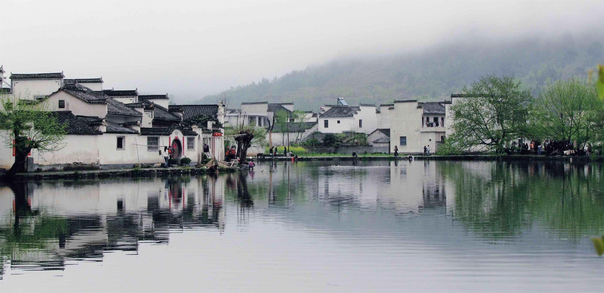

IMPRESSION OF XIDI:
BETWEEN DREAM AND REALITY
WIP Short Documentary
Xidi is a village built over 950 years ago in the Huizhou region of Anhui province, China. The village is known for the 124 well-protected historical dwelling preserved from 14 to 19th century when the local business culture is prevailing among the country. Designed with a complete set of boat-shaped drainage system, the perfect integration of nature landscape and architecture attracts plentiful artists as the representative of classical Chinese aesthetics.
Xidi reflects most of the commercialized ancient village in China ever since it was declared a part of the “Ancient Villages in Southern Anhui” World Heritage Site by UNESCO (The United Nations Educational, Scientific and Cultural Organization) in 2000. Nowadays, most of the local residents depend on tourism for a living, while a large percentage of original inhabitants moved to more convenient and more developed places of residence. The local residents attempt to cooperate with art schools as well, providing board and lodging for the students.
We will see local residents struggling to achieve the balance between pursuing convenient, modern life and maintaining the historical landscape. In a heritage site where any small modification to current dwelling is required to negotiate with local government, how do they deal with the incommodity? How do they feel about living in Xidi? What are their attitudes toward being disturbed by tourists every day?
Impression of Xidi: Between Dreams and Reality is dedicated to generate an impressionistic portrait of a typical Chinese tourism heritage location consist of observational footage and poetic narration and dream-like painting scenes. We will experience the beauty inherent to the delicate balance of maintaining the daily life in a historical site.